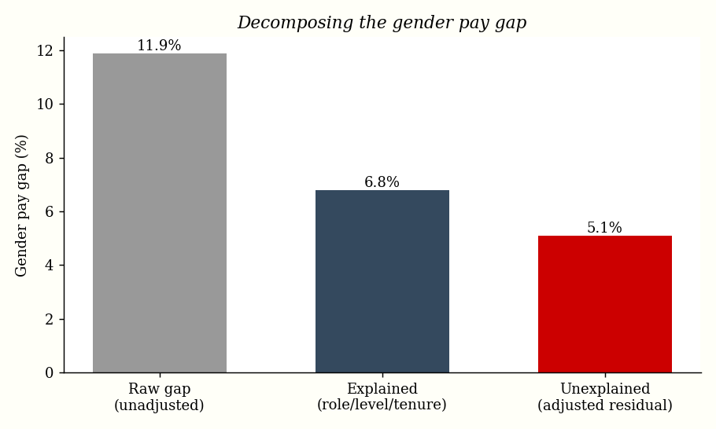
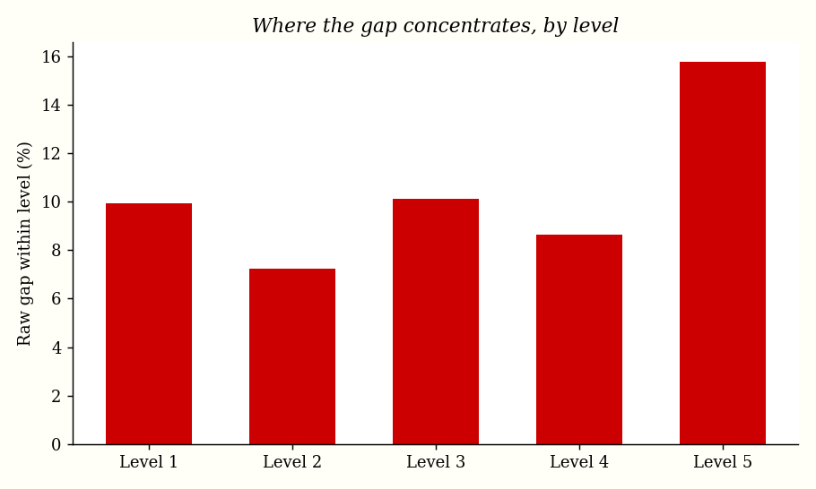

← Camille's Lot / Pay Equity Analysis
Pay Equity & Pay Transparency Analysis
Separating the explained from the unexplained gender pay gap — the audit behind a pay-transparency report
Why this matters now
As of 2026, pay transparency is law in Canada. Ontario's Pay Transparency Act (in force January 1, 2026) requires salary ranges in job postings and, for larger employers, annual pay-transparency reporting; British Columbia requires employers to publish their gender pay gap on a staged schedule, reaching employers with 50+ staff by November 1, 2026.A reported headline pay gap is not, by itself, evidence of discrimination — it blends together who holds which jobs with how people are paid within the same job. The analyst's job is to separate the two.
The number that gets published is the easy part. The hard part — and where a compensation analyst earns their keep — is explaining it: how much of the gap is driven by legitimate factors (role, level, tenure), and how much is an unexplained residual that survives those controls and warrants remediation?
The data
This analysis uses a synthetic dataset of 1,500 employees — no real personnel data — generated with a fixed random seed so the results are fully reproducible. The generator deliberately bakes in two patterns every real workforce shows:
- Occupational segregation (an explained source of gap): women are slightly over-represented in lower-paying job families and under-represented at senior levels.
- An unexplained penalty: holding role, level, and tenure constant, women are paid about 5% less. This is the inequity the audit should detect — if the method works, it should recover roughly that 5%.
Each record has salary, female, role (5 job families), level (1–5), and tenure (years).
Method
The headline (raw) gap compares mean pay directly. The adjusted gap comes from an ordinary-least-squares regression on log salary, controlling for role, level, and tenure. The coefficient on female is the unexplained gap; exponentiating converts it from log points to a percentage.
model = smf.ols("np.log(salary) ~ female + C(role) + level + tenure", data=df).fit()
adjusted_gap_pct = (1 - np.exp(model.params["female"])) * 100
Remediation cost is then the total payroll increase required to lift each underpaid woman's salary by that unexplained percentage.
Results
The headline gender pay gap is 11.9%. Decomposing it shows most of that is explained by where people sit in the organization — but a statistically significant residual remains.

| Metric | Value |
|---|---|
| Raw (unadjusted) gap | 11.9% |
| Explained by role / level / tenure | 6.8% |
| Unexplained (adjusted) gap | 5.1% (95% CI 4.5–5.7%) |
Significance of female coefficient | p < 0.0001 |
| Model R² | 0.958 |
| Estimated remediation cost | ~$4.56M (2.25% of payroll) |
The audit recovers a 5.1% unexplained gap — almost exactly the ~5% penalty that was injected into the synthetic data, and overwhelmingly significant (p < 0.0001). In other words, the method correctly distinguishes the part of the gap that is structural (6.8%, explained by job mix) from the part that is not (5.1%).

So what? (the total-rewards translation)
For a compensation team, this turns a politically fraught headline into an actionable plan:
- Report honestly: publish the 11.9% headline, but contextualize that 6.8 points reflect job mix and 5.1 points are an unexplained residual under active remediation.
- Budget the fix: closing the residual costs ~$4.56M, or 2.25% of payroll — a number leadership can actually plan around, phased over one or more comp cycles.
- Target it: the within-level breakdown shows where the residual concentrates, so adjustments go where they matter instead of across the board.
- Track it: re-run the model each cycle; the residual should shrink as remediation lands.
Reproduce it
The full analysis is a single, dependency-light Python script:
cd papers/pay-equity pip install pandas numpy statsmodels matplotlib python3 analysis.py # regenerates results.json and both charts
View the source → | Back to CV
Synthetic data only. No real compensation or personnel records are used anywhere in this project.